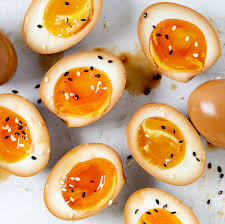

soy eggs~

Full recipe credits to Myo Quinn's soy-marinated eggs.
Description:
Yummy soy-marinated eggs that are great to eat with ramen or just as a snack!
Ingredients:
- 6 large eggs
- 1 cup reduced sodium soy sauce
- 8 cloves garlic, peeled
- 3 Tbsp sugar
- 2 Tbsp unseasoned rice vinegar
- 2 dried chillies, optinal
- 3 dried shiitake mushrooms, optional
- Toasted sesame oil, for garnish
- Toasted sesame seeds, for garnish
Steps
- bBing a medium pot of water to boil over medium high heat
- Gently lower the eggs into the boiling water and cook for 7 minutes
- Using a slotted spoon, transfer the eggs into a large bowl of ice water until cool
- Peel the eggs
- In the same medium pot add the soy sauce, 1/2 cup water, garlic, sugar, rice vinegar, chiles and shiitake mushrooms
- Bring the mixture to a boil over medium heat
- Reduce heat to simmer for 10 minutes
- Remove pot from heat and add peeled eggs
- Let eggs marinade overnight
- To serve, slice the eggs in half
- Drizzle with marinade and sesame oil, and sprinkle with sesame seeds